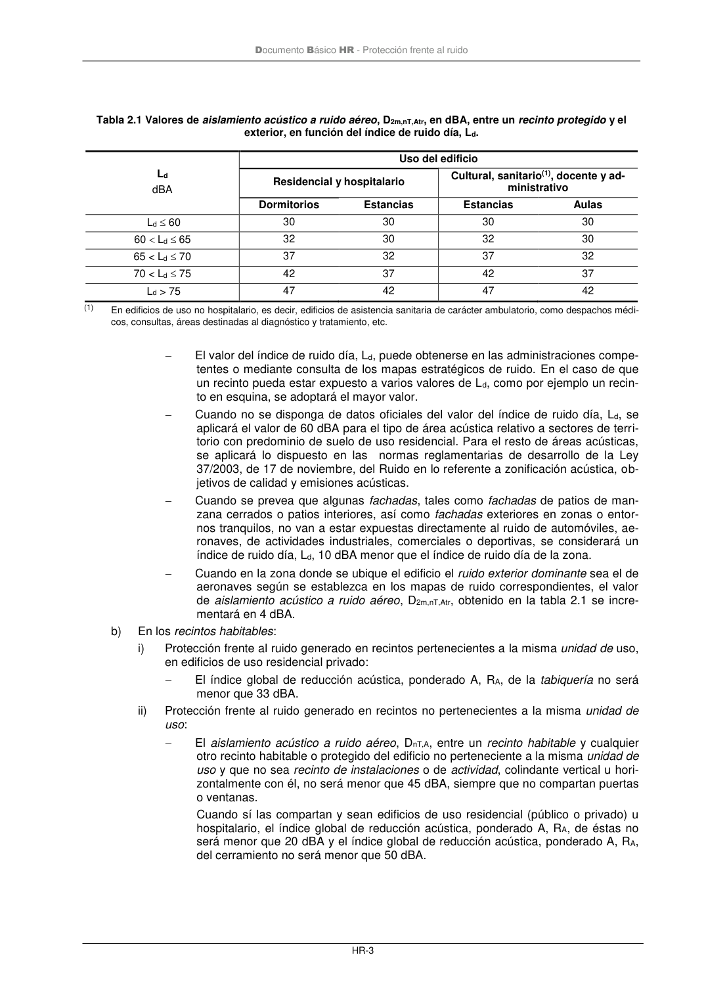

DB-HR Protección frente al ruido · edición 2019-12-20 · capa oficial
Documento DB-HR-oficial · SHA-256 del PDF a67baeca5138bb1f121f797d23a79a4557bd9ac4abacd954024893e05411eeab
Copia fiel del PDF fuente · Fuente oficial
Ficha de la disposición en la fuente oficial
Formatos: JSON del segmento · Markdown
2.1 Valores límite de aislamiento 2.1.1 Aislamiento acústico a ruido aéreo 2.1.1 Aislamiento acústico a ruido aéreo Los elementos constructivos interiores de separación, así como las fachadas, las cubiertas, las mediane- rías y los suelos en contacto con el aire exterior que conforman cada recinto de un edificio deben tener, en conjunción con los elementos constructivos adyacentes, unas características tales que se cumpla: a) En los recintos protegidos: i) Protección frente al ruido generado en recintos pertenecientes a la misma unidad de uso en edificios de uso residencial privado: − El índice global de reducción acústica, ponderado A, RA, de la tabiquería no será menor que 33 dBA. ii) Protección frente al ruido generado en recintos no pertenecientes a la misma unidad de uso: − El aislamiento acústico a ruido aéreo, DnT,A, entre un recinto protegido y cualquier otro recinto habitable o protegido del edificio no perteneciente a la misma unidad de uso y que no sea recinto de instalaciones o de actividad, colindante vertical u hori- zontalmente con él, no será menor que 50 dBA, siempre que no compartan puertas o ventanas. Cuando sí las compartan, el índice global de reducción acústica, ponderado A, RA, de éstas no será menor que 30 dBA y el índice global de reducción acústica, pon- derado A, RA, del cerramiento no será menor que 50 dBA. iii) Protección frente al ruido generado en recintos de instalaciones y en recintos de activi- dad: − El aislamiento acústico a ruido aéreo, DnT,A, entre un recinto protegido y un recinto de instalaciones o un recinto de actividad, colindante vertical u horizontalmente con él, no será menor que 55 dBA. iv) Protección frente al ruido procedente del exterior: − El aislamiento acústico a ruido aéreo, D2m,nT,Atr, entre un recinto protegido y el exte- rior no será menor que los valores indicados en la tabla 2.1, en función del uso del edificio y de los valores del índice de ruido día, Ld, definido en el Anexo I del Real Decreto 1513/2005, de 16 de diciembre, de la zona donde se ubica el edificio. Documento Básico HR - Protección frente al ruido HR-3 Tabla 2.1 Valores de aislamiento acústico a ruido aéreo, D2m,nT,Atr, en dBA, entre un recinto protegido y el exterior, en función del índice de ruido día, Ld. Ld dBA Uso del edificio Residencial y hospitalario Cultural, sanitario(1), docente y ad- ministrativo Dormitorios Estancias Estancias Aulas Ld 60 30 30 30 30 60 Ld 65 32 30 32 30 65 <Ld 70 37 32 37 32 70 <Ld 75 42 37 42 37 Ld > 75 47 42 47 42 (1) En edificios de uso no hospitalario, es decir, edificios de asistencia sanitaria de carácter ambulatorio, como despachos médi- cos, consultas, áreas destinadas al diagnóstico y tratamiento, etc. − El valor del índice de ruido día, Ld, puede obtenerse en las administraciones compe- tentes o mediante consulta de los mapas estratégicos de ruido. En el caso de que un recinto pueda estar expuesto a varios valores de Ld, como por ejemplo un recin- to en esquina, se adoptará el mayor valor. − Cuando no se disponga de datos oficiales del valor del índice de ruido día, Ld, se aplicará el valor de 60 dBA para el tipo de área acústica relativo a sectores de terri- torio con predominio de suelo de uso residencial. Para el resto de áreas acústicas, se aplicará lo dispuesto en las normas reglamentarias de desarrollo de la Ley 37/2003, de 17 de noviembre, del Ruido en lo referente a zonificación acústica, ob- jetivos de calidad y emisiones acústicas. − Cuando se prevea que algunas fachadas, tales como fachadas de patios de man- zana cerrados o patios interiores, así como fachadas exteriores en zonas o entor- nos tranquilos, no van a estar expuestas directamente al ruido de automóviles, ae- ronaves, de actividades industriales, comerciales o deportivas, se considerará un índice de ruido día, Ld, 10 dBA menor que el índice de ruido día de la zona. − Cuando en la zona donde se ubique el edificio el ruido exterior dominante sea el de aeronaves según se establezca en los mapas de ruido correspondientes, el valor de aislamiento acústico a ruido aéreo, D2m,nT,Atr, obtenido en la tabla 2.1 se incre- mentará en 4 dBA. b) En los recintos habitables: i) Protección frente al ruido generado en recintos pertenecientes a la misma unidad de uso, en edificios de uso residencial privado: − El índice global de reducción acústica, ponderado A, RA, de la tabiquería no será menor que 33 dBA. ii) Protección frente al ruido generado en recintos no pertenecientes a la misma unidad de uso: − El aislamiento acústico a ruido aéreo, DnT,A, entre un recinto habitable y cualquier otro recinto habitable o protegido del edificio no perteneciente a la misma unidad de uso y que no sea recinto de instalaciones o de actividad, colindante vertical u hori- zontalmente con él, no será menor que 45 dBA, siempre que no compartan puertas o ventanas. Cuando sí las compartan y sean edificios de uso residencial (público o privado) u hospitalario, el índice global de reducción acústica, ponderado A, RA, de éstas no será menor que 20 dBA y el índice global de reducción acústica, ponderado A, RA, del cerramiento no será menor que 50 dBA. Documento Básico HR - Protección frente al ruido HR-4 iii) Protección frente al ruido generado en recintos de instalaciones y en recintos de activi- dad: − El aislamiento acústico a ruido aéreo, DnT,A, entre un recinto habitable y un recinto de instalaciones, o un recinto de actividad, colindantes vertical u horizontalmente con él, siempre que no compartan puertas, no será menor que 45 dBA. Cuando sí las compartan, el índice global de reducción acústica, ponderado A, RA, de éstas, no será menor que 30 dBA y el índice global de reducción acústica, ponderado A, RA, del cerramiento no será menor que 50 dBA. c) En los recintos habitables y recintos protegidos colindantes con otros edificios: El aislamiento acústico a ruido aéreo (D2m,nT,Atr) de cada uno de los cerramientos de una me- dianería entre dos edificios no será menor que 40 dBA o alternativamente el aislamiento acús- tico a ruido aéreo (DnT,A) correspondiente al conjunto de los dos cerramientos no será menor que 50 dBA.
